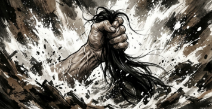
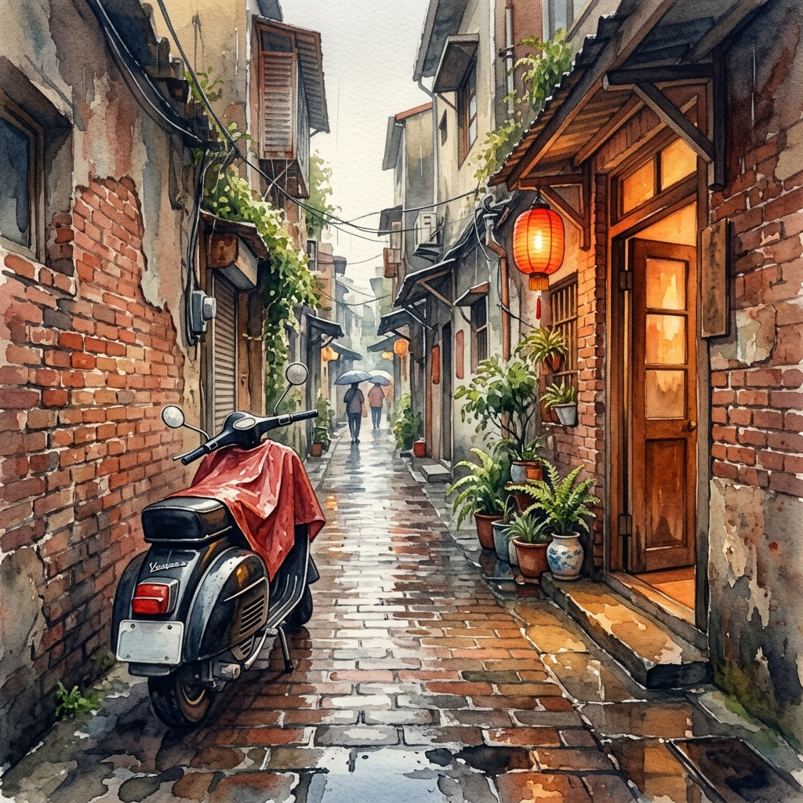

在窄街的摺痕裡，聽見水聲與靈魂：新店後街的生命長歌

前言：水岸餘溫，窄街裡的浩蕩靈魂
若說新店溪是一條奔騰百年的滄桑血脈，那麼新店路與後街，便是那緊貼著河畔、靜默守候的骨肉。這條昔日商賈雲集、炭火與木香交織的巷弄，雖然在歲月的洗禮下日漸狹窄，窄得僅容單行，窄得讓日光也顯得侷促，但棲居於此的庶民們，卻在每一次潮起潮落間，淬煉出如大坪林圳水般清澈的明靈心性。他們看過朝代更迭的煙塵，走過烽火連天的歲月，卻始終不曾遺落那份「救人於危、憫人於苦」的溫潤。這不只是一段地誌，而是一曲關於生命尊嚴與鄰里仁義的長歌，每一聲弦響，都帶著碧潭深處最熾熱的溫度。
一、 《碧潭之眼：與死神博弈的生命擺渡》
在新店溪畔長大的孩子，骨子裡都流淌著水。早期的新店溪未築堤防，水色雖美，卻也藏著無情的漩渦。劉大嫂回憶起夫家的祖父，那是一位能在激流中看穿生死的老人家。阿公水性極佳，對他而言，碧潭不只是風景，更是一處隨時可能吞噬鄰里的修羅場。每當有人失足溺水，他那雙佈滿老繭的手，便是死神面前最後的攔截線。
那份對水的敬畏與對人的熱誠，是會遺傳的。一九二四年，一場足以傾覆山河的大水漫過了新店街，娘家外公在洪流翻湧、生死一線的剎那，顧不得斯文，在沒提防的情況下抓起外婆（當時或許還是新嫁娘）的長髮，硬是將她從泥水中拽回人間。那是何等慘烈而深刻的救護？而在數十年後，劉大嫂的先生亦在岸邊重演了這份義勇，當頑皮的孩子跌入挖土機挖出的深潭，他沒有一絲遲疑，嘶聲力竭地吶喊著，多麼希望自己如祖父般壯勇能縱身一跳，將那沉入水底的稚嫩生命重重托起 ，可惜稚嫩的忠告擋不住死神的焦躁。這家人與水的博弈，寫就了後街最堅韌的生命底色。
二、 《春寒斷魂：一場血色黃昏下的慈悲換取》
歷史的寒風，總是在最繁華處撒下最冷冽的霜。一九四七年的春季，新店街頭被二二八事件的恐懼籠罩。當時，一名外省軍官陳中尉的小女兒被台籍激進份子擄走，軍官憤怒的咆哮震動了整條街：「若不交人，必然血洗新店！」在那個動輒得咎、人人自危的時刻，劉大哥的父親——那位人稱「大尾」的豪傑，站了出來 。
他認為大人的政治紛爭不該由孩子償還，憑著一身膽識，他孤身入險境，在那幽深黑暗的防空洞中尋回了渾身顫抖的小女孩，並毫髮無傷地交還。那是化解了一場滅村危機的義舉 。陳中尉感激地奉上滿箱珠寶，但劉老先生分文未取，那是身為新店人的傲骨。遺憾的是，英雄沒能躲過同胞的猜忌，他竟在隨後的報酬取與未取的真相口角中，遭同胞以扁鑽刺殺，成了這塊土地上最悲情的註腳，也讓劉大哥成為一出生，就沒了父親的遺腹子 。這份以命換來的和平，至今仍隨著碧潭的霧氣，沉重地壓在老一輩的心頭。
三、 《微雨簷下：一件破雨衣與幾角碎銀的溫柔》

後街的仁義，不一定都要動刀動槍，更多時候是藏在生活的褶皺裡。劉大嫂家門前，曾有一輛頻繁停靠的機車，座墊上的一道裂痕在陰雨綿綿的午後顯得格外刺眼。劉大嫂想著：若是雨淋進了海綿，鄰居坐上去便會濕了褲子。於是，她隨手取了一件破雨衣覆蓋其上 。那不是什麼昂貴的贈予，卻是一份「不願人苦」的體貼。當車主後來帶著禮物登門致謝時，那份流轉在窄巷間的情誼，比任何珠寶都要耀眼 。
這種體恤，甚至延伸到了被世人遺忘的角落。早期開天宮旁的「摩天嶺」，住著一群為了家計而出賣皮肉的辛酸女性。劉大嫂從不看輕她們，她深知生存之大不易。當這群女性來買菜或購物時，劉大嫂總會叮囑著「少收一點錢」，自動把尾數抹去 。在那個生存空間窄隘而普遍刻薄的年代，這幾角似有若無的寬容，是對那群在社會底層掙扎的靈魂最溫柔的擁抱。
四、 《尺土存心：在寸土寸金間留一方浩蕩乾坤》
新店路與後街的土地，每一寸都承載著百年來的繁華身價，但在這裡，人們卻懂得「讓」。後街有些巷弄現在被外地觀光客戲稱為「摸乳」巷，然而，原本它們狹窄得無法錯身，是當地的地主們主動捐出私有地，退後幾步，才成就了大眾前後街通行的便利 。這種「利他」的空間美學，在現今爭地如爭命的社會中，顯得如此奢侈而珍貴。
更有甚者，如高家對「道義」的堅持。當年地主因欣賞劉大嫂父親--高爺爺的誠信，欲贈予土地，但其父堅持「沒錢買就不該平白受領」。隨後地主移民他鄉、音訊全無，高家竟然為了守住那份對土地的敬畏與誠信，數十年如一日地代繳地價稅 。他們守的，不只是地，而是一個新店人對「名聲」與「承諾」的終身祭祀。這種近乎愚勇的誠信，讓後街的歷史不只是斷簡殘編，而是有血有肉的人格實踐。
結尾：溪水清明，人間不老
當我站在新店溪的提岸上，看著那些在如意大廈下方被開發抹去的防空洞殘影，或是那條已成為單行道的後街，心中湧起的並非滄海桑田的感傷，而是一種被溫情洗滌過的清明。
新店路與後街的先民們，用他們的一生告訴我們：街道的寬度從來不決定靈魂的高度。他們在洪水中抓緊彼此的髮，在戰爭的屠刀前救下敵對陣營的孩子，在微雨中蓋上一件舊雨衣，在冷言冷語中為苦難的女性留一分尊嚴。這些故事如同當年的大坪林圳水，清澈、無私，且源遠流長。
在這個凡事講求效率與回報的時代，後街的仁義是一面鏡子，照見了我們內心的荒蕪。原來，最昂貴的遺產不是南京東路的田產，而是那份「為人著想」的本心。碧潭的俠骨不老，是因為這片土地上，始終有人願意在窄巷中側身，給他人讓出一條寬闊的路。溪水依舊流著，而那些關於救贖、誠信與寬容的記憶，將會是這座山城永不乾涸的靈魂之源。